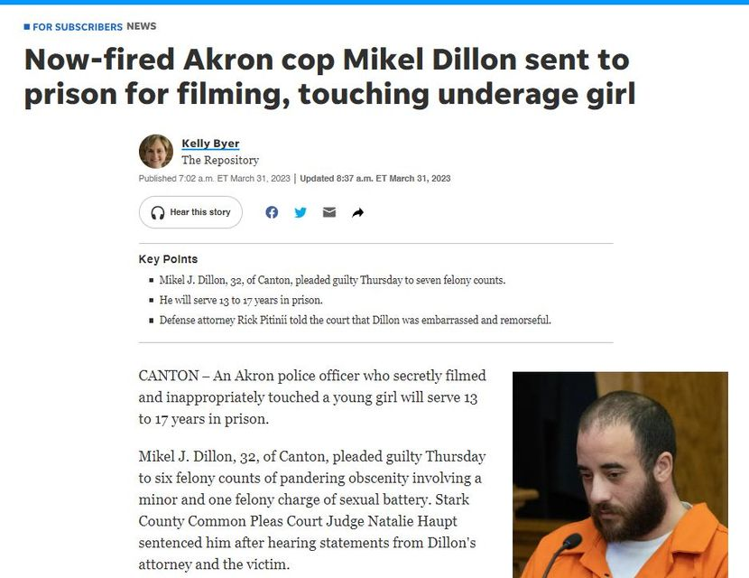

Timeline photos
These pedophile situations interest me because these people are SO hated by society (for good reason), yet Jesus says "love your enemy." Was he talking about pedophiles too? Of course.
These also deeply interest me because my best friend in elementary school is spending life in prison for something very similar to what this guy did.
If we don't talk about this stuff, nothing will get better.
The first thing to consider is that there are 2 types of pedophiles. Ones that think about it and ones that do it.
There is actually a support group called "Virtuous Pedophiles." It's for pedophiles who acknowledge having a sexual interest in children and do not act on their attraction. Members support each other in trying to lead normal lives without committing child sexual abuse.
"Virtuous Pedophiles is a forum which takes a firm stand against child sexual exploitation of any kind, including viewing child pornography."
The first lesson we must learn is that pedophiles are people who find children sexually attractive. Child molesters are pedophiles who have acted on their desires.
Do you see how we don't even have the most basic understanding of these people simply because we want to "lock them up and throw away the key." Fortunately, the American justice system is more nuanced than that.
Humans are sick disgusting creatures. We eat eggs, slaughter endless animals and destroy our habitat. We all are a negative impact on the Earth. So let's get it out of the way that you and I are somehow more virtuous than anyone else.
But some of us try to be better. Some of us have stopped eating meat. Some of us are running our cars and homes on solar power. Some of us have strong sexual desires of ALL SORTS and don't act on them because it would be wrong for many reasons.
It's ok that we are sick and disgusting because WE ALL are sick and disgusting. It's that thing Jesus was talking about where we are all sinners but God loves us anyway.
We need to talk more and be more honest with each other. I really can't think of any other way we will get better.
And for the record, I'm VERY thankful this man is locked up. Honestly, I'd rather his prison term be contingent on whether or not they feel he will re-offend when he gets out. I'm glad my friend from elementary school is in for life. I don't see him changing fundamentally.
If you are just a person who finds children sexually appealing, please talk to someone about it. It's ok. I'm into that weird step-brother / step-sister stuff on pornhub. Who knows why we like what we like. I don't even have a sister. Just talk to someone about it and try to make sure you don't act on it. Kids can't make rational choices about these types of things. Molesting a child is, legitimately, one of the worst possible crimes.
And thank you, APD, for not supporting this guy after he was convicted for molesting this person. You are better than the Catholic Church.